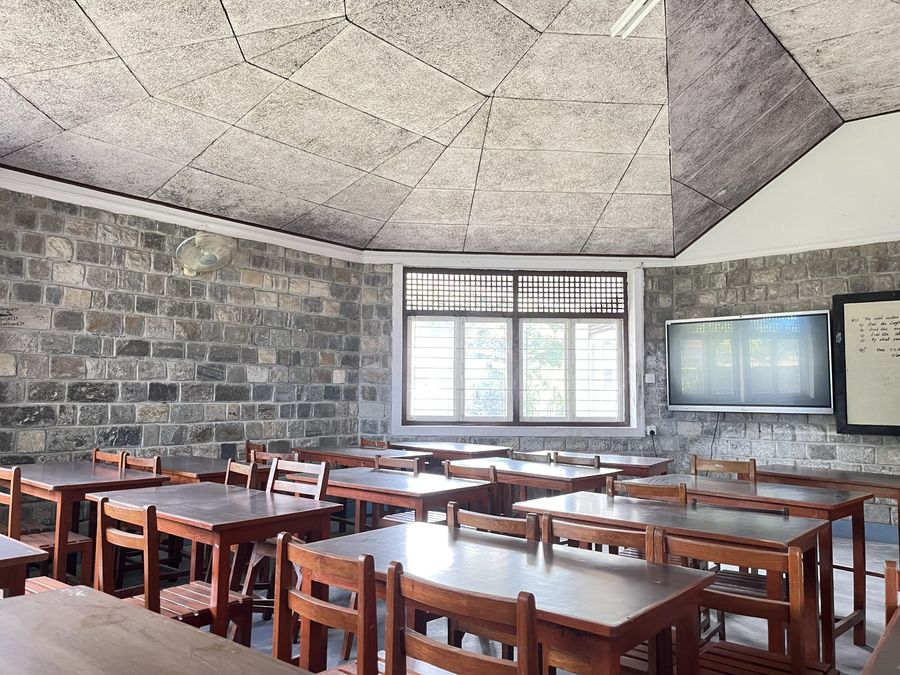
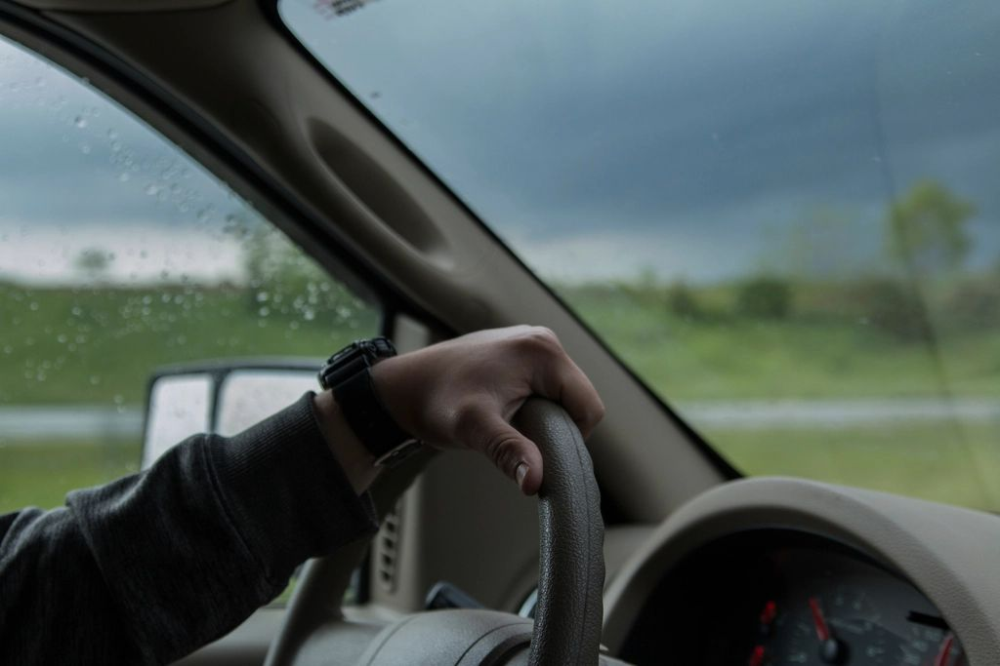

Ana sayfaSüreç
Ehliyet süreci, adım adım
Kayıttan belgenizi elinize alana kadar beş durak. Sıra gerçek sıradır: her durakta ne olduğunu ve neyi hazırlamanız gerektiğini anlattık.
Kayıt
Kursa kaydınızı yaptırdığınızda dönem ve ders programınız belirlenir. Sürecin en çok zaman alabilen kısmı belgeleri tamamlamaktır; sağlık raporu gibi belgeleri erkenden halletmek sonraki adımları hızlandırır.
Kayıt görüşmesinde sorabileceğiniz konular:
- Hangi sınıflar için eğitim verildiği
- Dönem başlangıcı ve kontenjan
- Teorik ve direksiyon derslerinin gün ve saatleri
- Ücret ve ödeme seçenekleri
- Güncel evrak listesi
Kayıt için hazırlık listesi
Hazır: 0 / 5
İşaretlemeler JavaScript açıkken bu cihazda hatırlanır.
Liste genel bilgidir; güncel evrak listesini kursa sorun.
Teorik eğitim

Temsili görselTeorik derslerde sınavda karşınıza çıkacak dört ana konu işlenir. Amaç yalnız sınavı geçmek değil; trafikte neyi neden yaptığınızı anlamaktır.
- Trafik ve çevre bilgisiTrafik kuralları, işaretler, geçiş hakları, hız ve takip mesafesi.
- İlk yardımKaza yerinde güvenliği sağlamak, temel yaşam desteği ve yaralanmalarda ilk müdahale.
- Araç tekniğiMotorun ve aracın temel parçaları, bakım, gösterge ve ikaz lambaları.
- Trafik adabıSaygılı ve sabırlı sürüş, yayalara ve diğer yol kullanıcılarına karşı sorumluluk.
Trafik işaretleri, teorik sınavın en görsel konusu. Biçimden anlam çıkarmayı Levha testi sayfasında beş soruyla deneyin.
Direksiyon eğitimi
Direksiyon dersleri eğitmen eşliğinde yapılır ve kolaydan zora doğru ilerler. Ders gün ve saatlerini kursla birlikte planlarsınız.
- Araca biniş; koltuk, ayna ve emniyet kemeri ayarı
- Motoru çalıştırma, kalkış ve duruş
- Vites geçişleri ve hız kontrolü
- Şerit takibi, sinyal ve ayna kullanımı
- Kavşak, dönüş ve geçiş hakkı
- Park etme, geri manevra ve yokuşta kalkış
- Gerçek trafikte sürüş
Her manevrada aynı ritmi alışkanlık hâline getirin: ayna, sinyal, kontrol, sonra manevra.

Temsili görselSınavlar
Teorik sınav (e-sınav)
Milli Eğitim Bakanlığı'nın elektronik sınav merkezlerinde bilgisayar üzerinden yapılır. Sorular teorik eğitimdeki dört konudan gelir.
Soru sayısı, süre ve geçme notu resmî düzenlemeyle belirlenir; güncel bilgiyi kursa sorun.
Direksiyon sınavı
Teorik sınavı geçtikten sonra girilir. Araç kontrolü, kalkış, trafikte sürüş ve park gibi uygulamalar sınav görevlisi eşliğinde değerlendirilir.
Sınav tarihleri ve hak sayısı resmî takvime ve mevzuata göre belirlenir.
Sınav günü listesi
Hazır: 0 / 6
Direksiyon sınavında sık yapılan hatalar
- DUR levhasında tam durmadan geçmek
- Yaya geçidinde yayaya yol vermemek
- Ayna ve omuz kontrolü yapmadan şerit değiştirmek
- Sinyali unutmak ya da geç vermek
- Hız sınırını aşmak ya da gereksiz yavaş gitmek
- Park ederken çevreyi kontrol etmemek
Belgenizi almak
Sınavları başarıyla tamamladığınızda sürücü belgesi başvurusu nüfus müdürlüğüne yapılır. Randevuyu e-Devlet ya da Nüfus ve Vatandaşlık İşleri'nin randevu sistemi üzerinden alabilirsiniz.
Harç ve belge bedeli ödendikten sonra randevu gününde başvurunuz alınır ve belgeniz hazırlanır. Güncel adımları başvuru zamanı yaklaşınca kursa sorun.
Yeni sürücüler için
- İlk haftalarda tanıdığınız güzergâhlarda sürün; yoğun saat ve gece sürüşünü yavaş yavaş artırın.
- Takip mesafesini geniş tutun, yağmurda daha da açın.
- Sürüş sırasında telefonu elinize almayın.
- Uzun yoldan önce lastik basıncını ve ışıkları kontrol edin.
İlk durağa hazır mısınız?
Ön kaydınızı WhatsApp üzerinden bırakın ya da arayın. Kayıt dönemi, ders programı ve evraklar için bilgi verelim.